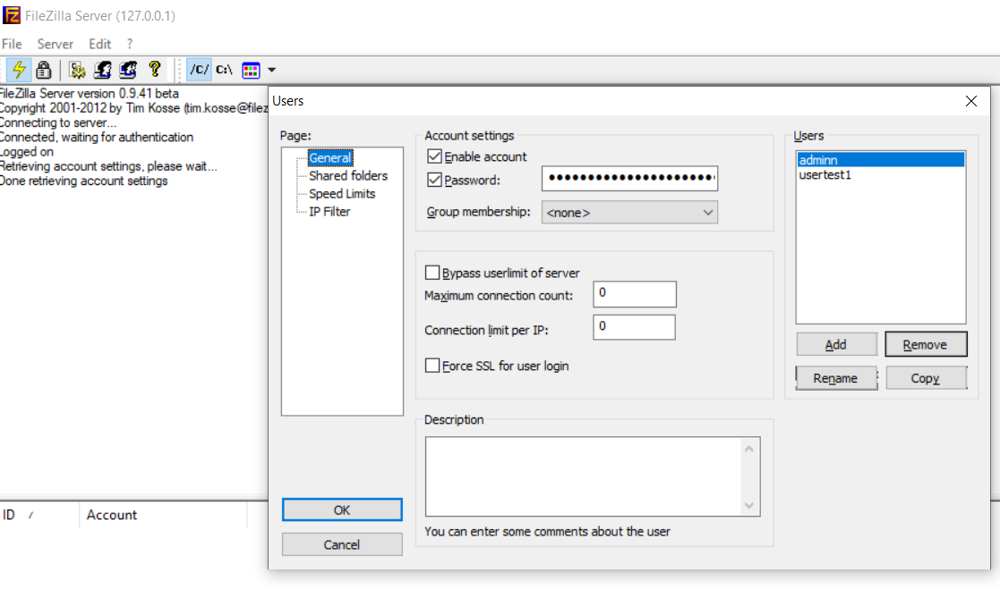
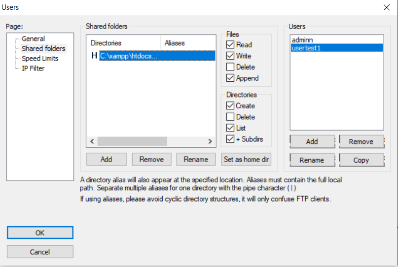
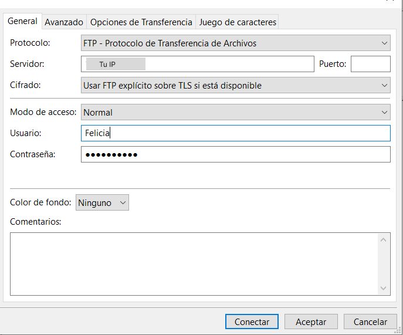

pasos para instalar y configurar FileZilla
¿Que es Filezilla ?
FileZilla es un software FTP (Protocolo de transferencia de archivos) gratuito y de código abierto que te permite transferir archivos entre tu computadora y un servidor. Te permite subir, descargar y gestionar archivos, así como editar y renombrar archivos y carpetas en tu servidor
Ahora, empecemos con el proceso de instalación y configuración:
- Instalar y configurar xampp. iniciar filezilla. Haga clic en admin para que lo lleve al servidor filezilla.
- Crear una cuenta de usuario:
Bajo "Editar", seleccione "Usuarios" y haga clic en el botón "Agregar" para crear una nueva cuenta de usuario. Cree una cuenta de administrador. Ingrese un nombre de usuario y contraseña para la cuenta y especifique el directorio al que el cliente puede acceder a los archivos.

-
Establecer permisos:
Haga clic en la cuenta de usuario creada y haga clic en la pestaña "Carpetas compartidas". Seleccione el directorio raíz del usuario y haga clic en el botón "Agregar". Elija los siguientes permisos: "Leer", "Escribir", "Listar", "Eliminar" y "Agregar".

-
Crear otra cuenta para otro cliente, especificar el directorio al que el cliente puede acceder y dar permisos de "leer" y "escribir", pero no de "eliminar".

-
Conectar el cliente:
Descargue e instale el software cliente FileZilla en el ordenador del cliente. Inicie el software e ingrese la dirección IP del servidor en el campo "Host". Ingrese el nombre de usuario y la contraseña para la cuenta creada.

- Probar la conexión: El cliente no necesita tener instalado XAMPP. Solo necesita usar el cliente FileZilla para conectarse.